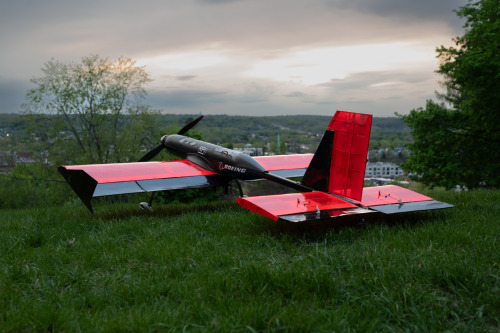
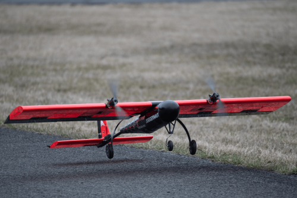
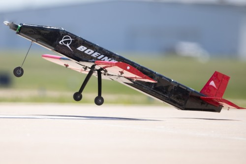
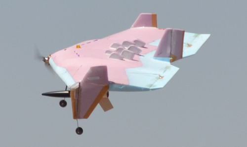
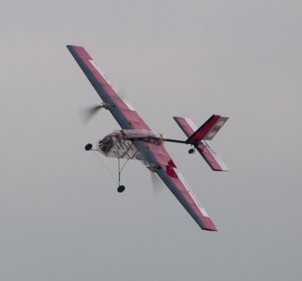
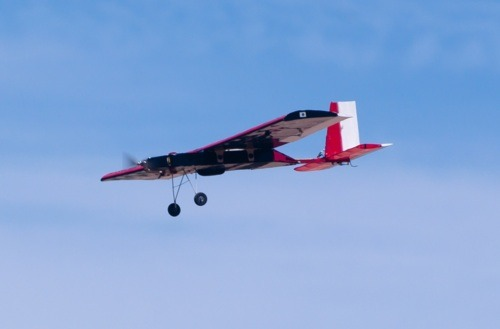
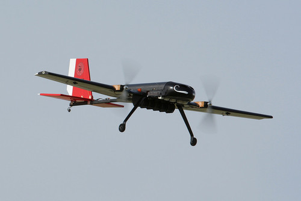
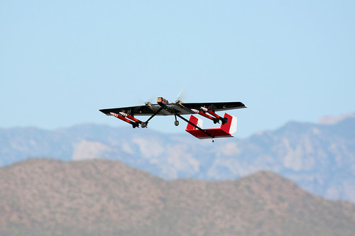
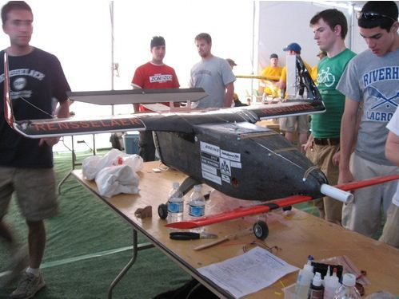

2025-2026: Koi
The Mission: This year’s ruleset focused on building a banner-towing passenger plane.
The team chose to use this year to experiment with our design process, introducing carbon fiber manufacturing, improved CFD techniques, and better modeling of our electric propulsion system. As a result of these improvements, Koi was able to carry a 190" x 38" banner for 6 laps and earn the third-highest M3 score at the flyoff.
- Placement: 6th out of 98
- Design Report: 10th (Score: 88.00)

Photo Credit - Kenny Xu
2024-2025: Juggernaut
The Mission: Scoring for this year focused on carrying an extremely heavy payload and deploying an ultralight autonomous glider to hit a target.
RPI DBF constructed the largest aircraft in the club’s history with Juggernaut, carrying 21 lbs of payload and measuring 6 feet in wingspan. Additionally, our drone was the lightest to complete M3 and earned us the winning score for that mission. Juggernaut earned the highest flight scores that the team has ever received, and placed 2nd overall for mission scores at the fly-off.
- Placement: TBD
- Design Report: TBD

Photo Credit - Kenny Xu
2023-2024: Rensselaerjet
The Mission: This year’s theme was Urban Air Mobility, with requirements to fit into a 2.5 foot parking space and to takeoff in less than 20 feet. Scoring focused on cargo-carrying efficiency, allowing the team to make effective use of a smaller budget compared to many other schools.
Rensselaerjet successfully completed all missions at competition for the first time since 2013 and placed second-highest for Mission 3.
- Placement: TBD
- Design Report: TBD

Photo Credit - AIAA
2012-2013
The Mission: This year’s competition was called “Joint Strike Fighter,” and required the teams to take off in a 30x30 ft. square, a shorter distance than in years past to simulate take-off from a “small, austere field.”
Perhaps the biggest development this year in meeting the design requirements was the team’s first use of a blended-wing body configuration. The body was made of laser-cut foam insulation.
- Placement: 3rd out of 81
- Design Report: TBD

2011-2012
The Mission: This year’s competition was called “Small Passenger Aircraft” and as in years past, consisted of three missions. Mission 1, or “Ferry Flight,” required the plane to complete the maximum number of laps within a 4-minute flight time. Mission 2, called “Passenger Flight,” called for a 3-lap flight with eight 1” x 1” x 5” aluminum blocks totaling 3.75 lbs. to simulate passengers...
To meet the design requirements, the team developed a water-tight fuselage capable of carrying either the 8 aluminum blocks or 2 liters of water. A serious storm hit southeast Wichita and a tornado formed, damaging the area around the Cessna East Field and preventing access to the competition site. As a result, the contest was ended prematurely...
- Placement: 29th out of 68
- Design Report: TBD

2010-2011
The Mission: This year’s competition was called the Soldier Portable UAV and required teams to be able to carry golf balls and a steel bar payload inside the plane. Additionally, the aircraft was required to fit in a standard carry-on suitcase with maximum linear dimension of 45 inches.
Our plane, ShoeTwo, lost its wing during its second mission flight on Saturday morning and crashed into the desert like a lawn dart. Fortunately, with a lot of hard work and some help from the Wichita State DBF team, we were able to rebuild the plane, now known as Shoe2.5 (a.k.a. “The Jimmy Express”), and complete all of the remaining flying missions.
- Placement: 21st out of 82
- Design Report: TBD

2009-2010
The Mission: This year’s competition was called the Baseball Team Plane and required teams to be able to carry 6-10 softballs inside of the plane and 1-5 “baseball bats” (actually pvc pipe) outside of the plane.
Our airplane, who is fondly known as Dr. Arthur Baskins, flew brilliantly at the competition and even achieved the highest score of any team for Mission 3.
- Placement: 9th out of 69
- Design Report: TBD

2008-2009
The Mission: This year’s competition was called the Unmanned Surveillance/Attack Aircraft. Teams were required to carry 4 Estes Patriot Rockets on the wings of the plane and one 4-liter Nalgene tank filled with water each with the ability to be released by remote control.
Our plane turned many heads at the competition because of its sleek design and stylish looks. Because we had successfully flown a plane at the previous competition, our goal for this year was not only to fly but to be a competitor. We were able to do this by refining our design process and using superior fabrication techniques, such as a blended mixture of wood and composite parts.
- Placement: 11th out of 54
- Design Report: TBD

2007-2008
The Mission: The contest this year was called Reconfigurable Short Field Transport. It involved carrying a mixture of half-liter water bottles and half-size clay bricks to simulate passengers and cargo.
After unsuccessfully getting our plane in the air at the 2007 competition, RPI’s goal for the 2008 competition was simply to make a plane that flies. We are happy to report that on February 23, 2008 RPI DBF made its first ever successful flight during a test flight at South Albany Airport.
- Placement: 28th out of 60
- Design Report: TBD

2006-2007
The Mission: This year’s competition was known as the Reconfigurable Sensor Platform and involved carrying an air sampling system and a camera ball system.
Two thousand seven was RPI’s first year participating in the DBF competition and we had a blast watching other teams fly and learning about their design and building techniques. We turned many heads at the competition with our unique canard design. Unfortunately, our plane was grossly overweight and failed to take flight.
- Placement: 36th out of 50
- Design Report: TBD
